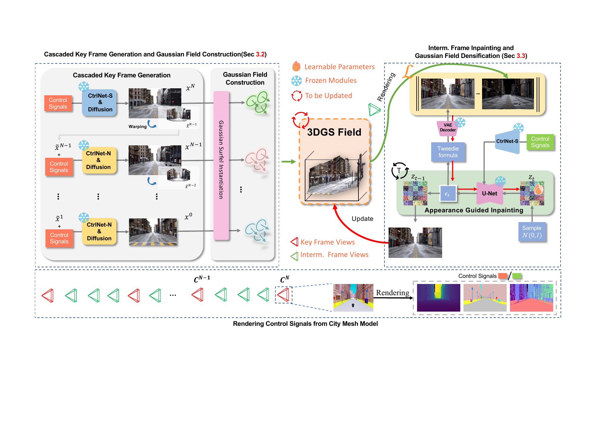
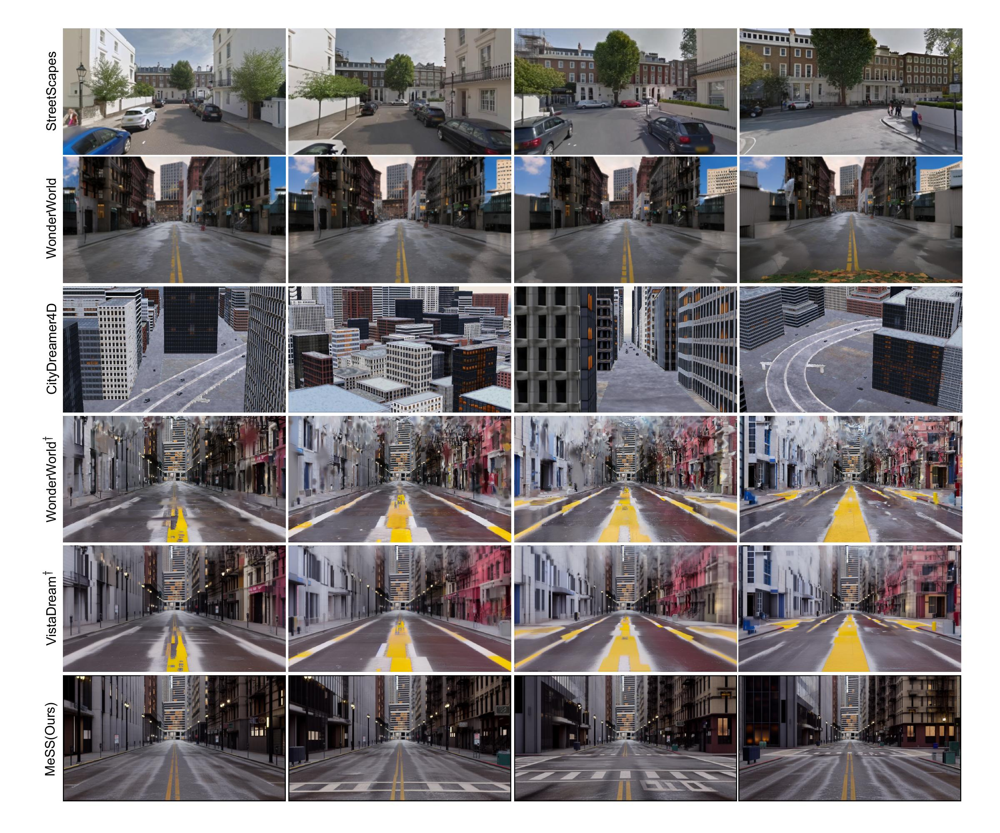
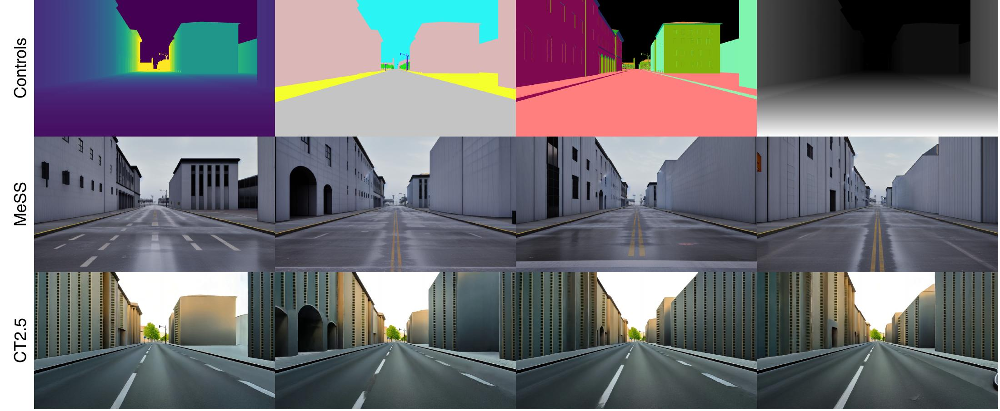
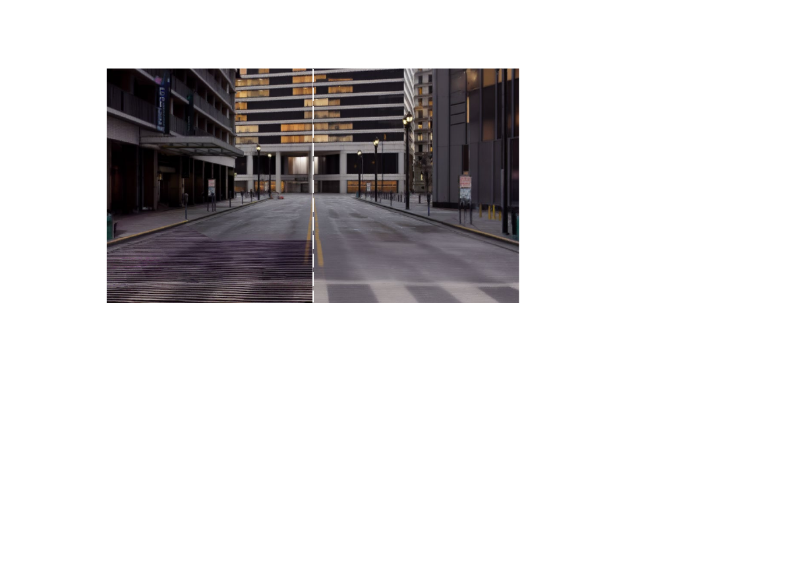
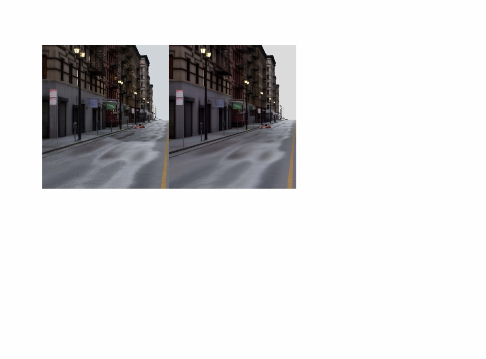

MeSS: City Mesh-Guided Outdoor Scene Generation with Cross-View Consistent Diffusion
Accepted at GCPR 2026
Abstract
Mesh models have become increasingly accessible for numerous cities; however, the lack of realistic textures restricts their application in virtual urban navigation and autonomous driving. Texturing them with generative models remains difficult: existing video-diffusion and outpainting-based scene generators drift in appearance over long camera trajectories and cannot guarantee pixel-level alignment with the given city geometry. This paper proposes MeSS (Mesh-based Scene Synthesis), which converts a textureless city mesh into a high-quality, style-consistent 3D Gaussian Splatting (3DGS) scene. Our key insight is a control-distribution match: we train image ControlNets directly on mesh-rendered depth, normal, and semantic priors, so the control signals stay in-distribution for any deployed city mesh and yield tight geometry–appearance alignment. Building on this, three cross-view consistency mechanisms counter appearance drift: Cascaded Outpainting CtrlNets generate geometrically consistent sparse key views; Appearance Guided Inpainting (AGInpaint) densifies the scene with intermediate views; and Global Consistency Alignment (GCAlign) removes global inconsistencies such as exposure shifts. Concurrently with generation, the 3DGS scene is reconstructed by initializing Gaussian surfels on the mesh surface. On a city-scale benchmark from the UE5 City Sample Project, MeSS reduces cross-view LPIPS by 31% and KID by 36% relative to the best competing method on each metric, achieving an FID of 28.17, and it transfers zero-shot to a real LoD3 city mesh. Once synthesized, the scene can be rendered in diverse styles through relighting and style transfer.
Method
MeSS follows a sparse-to-dense pipeline. Image ControlNets are trained directly on mesh-rendered depth, normal, and semantic maps, matching the geometric control signals used at inference.

- Stage I — Sparse key views. CtrlNet-S generates the initial view. CtrlNet-N then alternates depth-based warping and outpainting backwards along the camera path, conditioning on the preceding generated view to preserve appearance. Gaussian surfels are instantiated directly on the mesh using metric depth and surface normals.
- Stage II — Dense intermediate views. Appearance Guided Inpainting (AGInpaint) fills low-opacity regions in views rendered from the coarse Gaussian field. Training-free guidance preserves known RGB content while repairing holes and thin silhouettes; newly inpainted pixels densify the scene.
- Global Consistency Alignment. GCAlign alternates diffusion refinement and Gaussian-field updates to harmonize exposure and appearance across views.
Quantitative Results
Evaluation on city-scale sequences from the UE5 City Sample Project, including 200-frame sequences spanning 200 m camera paths. MeSS achieves 0.348 LPIPS, 28.17 FID, and 0.016 KID: a 31% reduction in cross-view LPIPS and a 36% reduction in KID relative to the best competing method on each metric.
| Method | LPIPS ↓ | FID ↓ | KID ↓ |
|---|---|---|---|
| CityDreamer4D | — | 88.48 | 0.049 |
| WonderWorld† | 0.516 | 75.81 | 0.076 |
| VistaDream† | 0.508 | 72.44 | 0.073 |
| StreetScapes | 0.519 | 29.93 | 0.025 |
| MeSS (Ours) | 0.348 | 28.17 | 0.016 |
† WonderWorld and VistaDream use the same metric mesh depth and an aligned inpainting diffusion model for matched comparisons. CityDreamer4D and StreetScapes are reference comparisons across different generation settings. StreetScapes values are taken from its paper and evaluated over 32–64 frames; its model uses substantially more training data.

Zero-Shot Generalization to Real LoD3 Meshes
Without retraining, MeSS transfers to TUM2Twin, a real LoD3 mesh of central Munich. Conditioned on mesh-rendered depth, normals, and semantics, generated facades follow the supplied geometry and remain consistent across views.

The remaining limitation is a UE5-style texture bias on real facades. Fine-tuning on real street imagery could reduce this appearance gap.
Cross-View Consistency


GCAlign trades some fine detail for visual coherence. Disabling it slightly improves the reported per-frame metrics (LPIPS 0.346, FID 26.25, KID 0.013), but leaves visible lighting seams. It can be disabled when per-frame fidelity is preferred.
Stylized Videos through Relighting or SDEdit
The generated Gaussian scenes support relighting and style transfer to produce diverse rendered videos.
BibTeX
@inproceedings{chen2026mess,
title={{MeSS}: City Mesh-Guided Outdoor Scene Generation with Cross-View Consistent Diffusion},
author={Chen, Xuyang and Zhai, Zhijun and Zhou, Kaixuan and Wang, Zengmao and He, Jianan and Wang, Dong and Zhang, Yanfeng and Sun, Mingwei and Wang, Xuqin and Westermann, R{\"u}diger and Wu, Tao and Schindler, Konrad and Meng, Liqiu},
booktitle={German Conference on Pattern Recognition (GCPR)},
year={2026},
eprint={2508.15169},
archivePrefix={arXiv},
url={https://arxiv.org/abs/2508.15169}
}